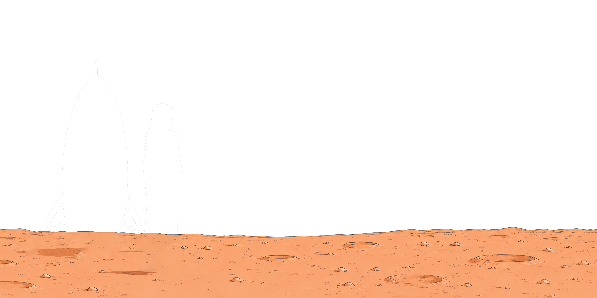
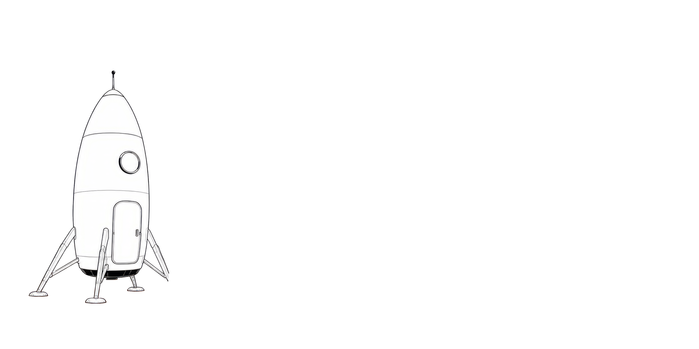
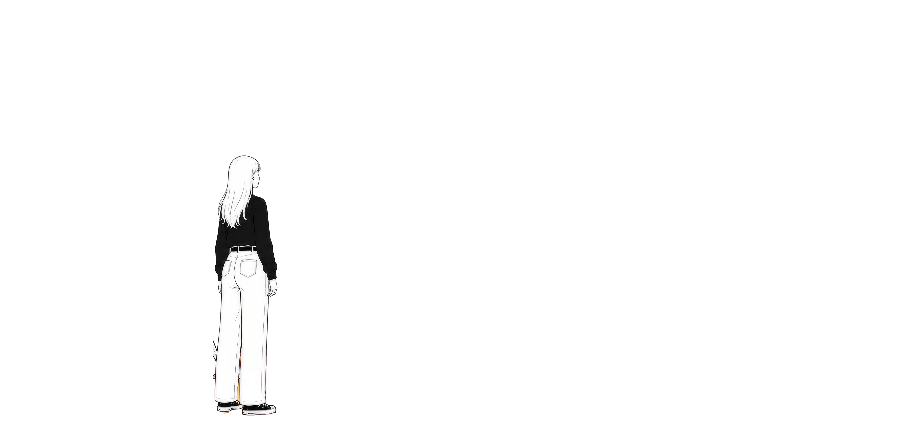

Hwang Hyeseon
Portfolio
Scroll
DEPARTURE✦
UX/UI GALAXY✦
AI NEBULA✦
VIBE CODING SYSTEM✦
항해 기록 · Voyage Log
0+
탐사한 행성
0
항해 연차
0
교신한 팀
0
주요 행성계
The Planets
세 개의 행성.
각 행성은 하나의 전문 분야입니다. 스크롤을 따라 차례로 도착합니다.
Planet 01
일러스트 · UX/UI 행성 “AURA”
Planet 01 · 도착
AURA-Ⅰ · UX/UI SYSTEM
설계의 행성
유저 리서치, 정보 구조, 인터랙션, 디자인 시스템. 사람의 흐름을 관측하고 가장 자연스러운 항로를 설계하는 곳입니다.
-
2025뉴로 뱅킹 앱Z세대 모바일 뱅킹 리디자인
-
2024커머스 대시보드셀러용 데이터 대시보드 설계
Planet 02 · 도착
NEBULA-Ⅱ · AI GRAPHICS
생성의 행성
생성형 AI로 무드보드부터 키비주얼까지. 상상을 빠르게 물질화하고 방향을 정제하는, 색과 형태가 태어나는 성운입니다.
-
2025플럭스 AI 키비주얼생성형 AI 캠페인 비주얼 시리즈
-
2024드림스케이프초현실 브랜드 아트 컬렉션
Planet 02
일러스트 · AI 그래픽 행성 “NEBULA”
Planet 03
일러스트 · 바이브코딩 행성 “EMBER”
Planet 03 · 도착
EMBER-Ⅲ · VIBE CODING
구현의 행성
AI 페어 코딩으로 디자인을 실제 동작하는 웹으로 착륙시킵니다. 아이디어가 코드로 타오르는, 구현의 대지입니다.
-
2024모션 랩 웹사이트GSAP 인터랙티브 랜딩 구현
-
2023포트폴리오 엔진코드 기반 포트폴리오 템플릿
일러스트 영역
탐험가 / 우주비행사 초상 (세로 4:5)
항해 일지 · Captain's Log
아이디어를 발견하고
제품으로 착륙시키는 사람.
저는 리서치부터 픽셀, 배포까지 전 과정을 아우르는 디자이너입니다. 사용자의 문제를 관측하고, AI 도구로 시각 언어를 실험하며, 코드로 직접 프로토타입을 만들어 검증합니다. 아이디어와 구현 사이의 거리를 좁히는 것이 제 항법입니다.
항로 · Flight Route
항해 절차.
01
관측 / 발견
문제와 사용자를 관측합니다. 리서치와 인터뷰로 진짜 좌표를 찾습니다.
02
항법 / 실험
AI 그래픽으로 방향을 시각화하고 여러 항로를 시험 비행합니다.
03
착륙 / 구현
바이브코딩으로 실제 동작하는 프로토타입에 착륙시켜 검증합니다.
04
교신 / 전달
개발팀과 교신하며 픽셀 완성도까지 챙겨 제품을 세상에 송신합니다.